My part
I co-shaped the product with the founder and designed both apps end to end, including SongMatch and Creative Room, plus the prototypes and decks used with investors and artists. The founder set the vision, a project manager ran delivery, and a team that grew to 5 developers and QA built it.
The problem
0.003€what an artist earns per stream
Social media gives artists reach, but no real relationship with the fans who were there first. Most fans say they would support their artists directly if there were a good way to do it.
Two apps, one product
Fans want to discover and feel close. Artists want to publish, reward and understand their community. One interface for both would have made each side worse, so I designed two role-based apps on one shared system: 300+ frames for fans, 400+ for artists. The same artist profile and the same rewards look different depending on who is holding the phone.


SongMatch: discovery like dating
Scrolling a catalogue is tiring. I borrowed a gesture everyone knows: swipe right to like a song, left to skip. Every like lands in a playlist the fan can keep.
Wireframes first. The first version, the screens I first handed to the developers. Fans stopped the clip with a button.


The final design. Swiping replaced the Stop button, because a swipe is the answer and the next song in one move.


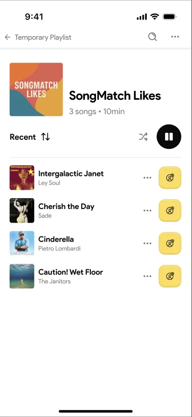
SongMatch for artists: pay to be heard, see if it worked
Fans swipe, but artists need a way into that stack. I designed the artist side as a four-step setup: pick songs, choose the clip fans will hear, pick a plan, and review before paying.
Wireframes first. In the first version, artists set cost, duration and views as three separate targets.

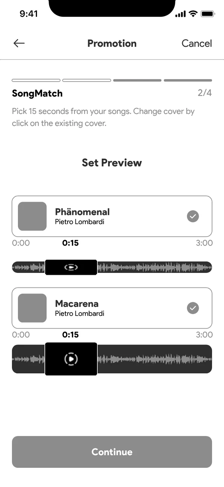


The final design. The plan comes down to one choice, how long it runs, with the estimated listens that buys.
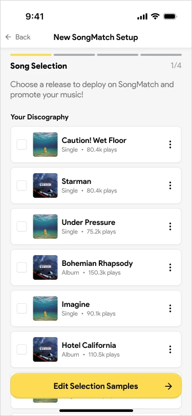


- The artist picks the 15 seconds. A fan decides in one hook, so the artist chooses which part plays, starting from a default clip.
- Every price shows what it buys. Plans show estimated listens next to the cost, and a free tier (100 views a month) lets new artists try it first.
- Results in fans, not impressions. Each promotion shows likes against skips and new followers, with a prompt to renew as it ends.


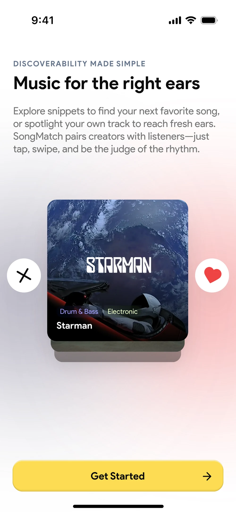
Creative Room: feedback pinned to the moment
"The middle part feels off" wastes everyone's time. In Creative Room, collaborators select part of the waveform and leave a note there, SoundCloud style, and a timeline keeps every upload, comment and task in order.
Wireframes first. I mapped the feedback flow and wireframed it before any visual design: open a file, mark a moment or a section, write the note.
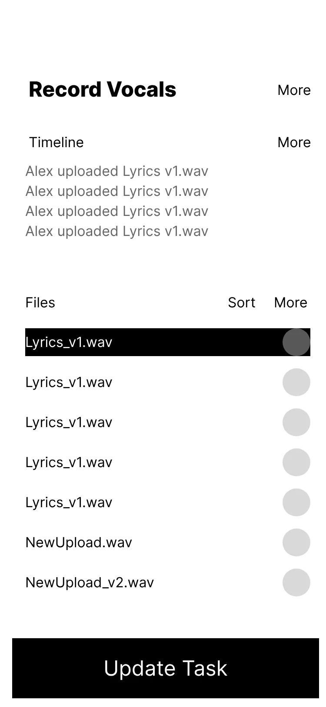


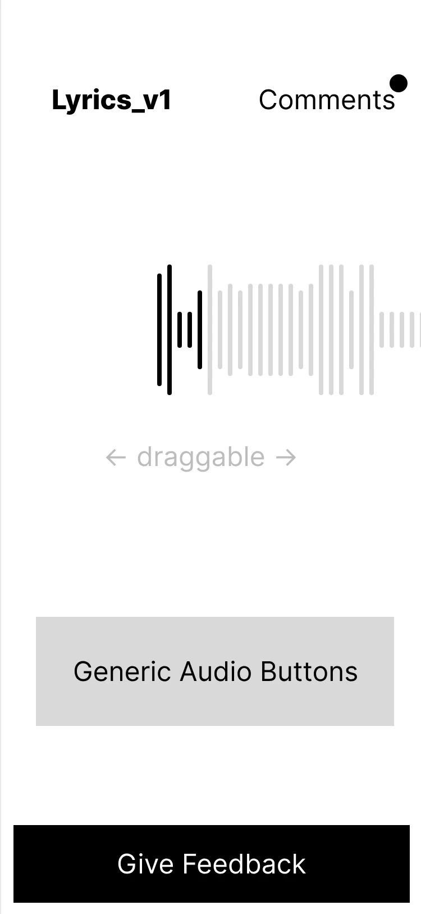

The final design.
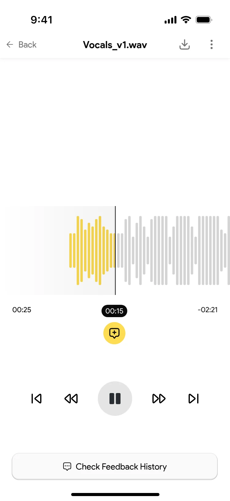


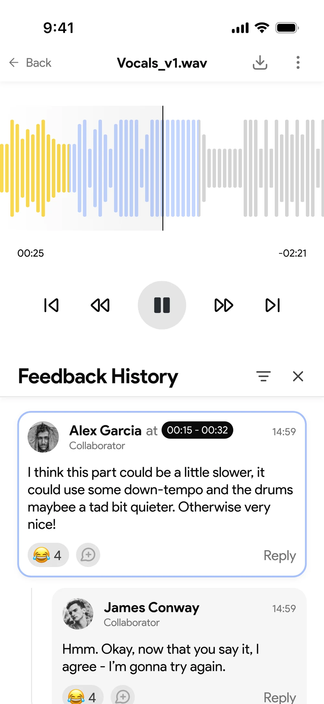
Everything around it. Projects, tasks and invites all feed one timeline, so nobody has to ask what changed.
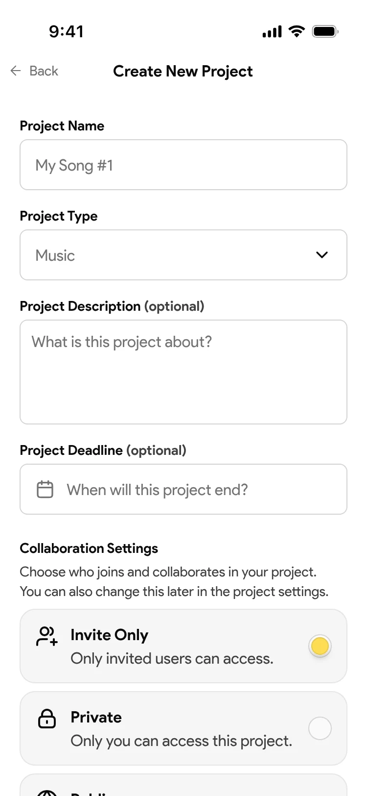
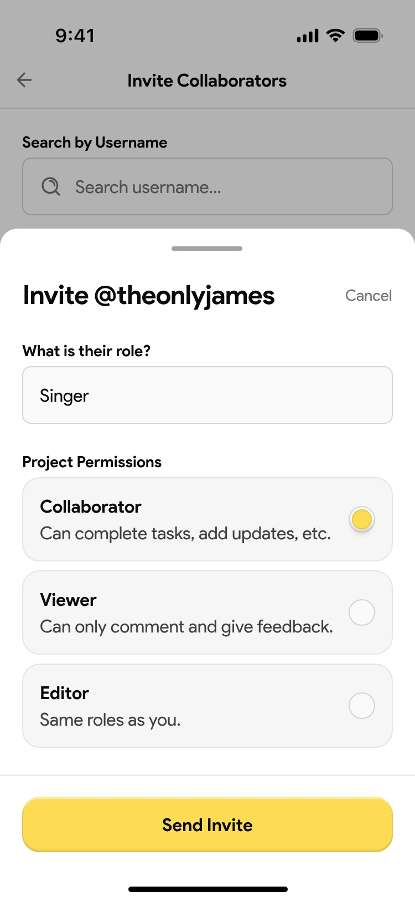
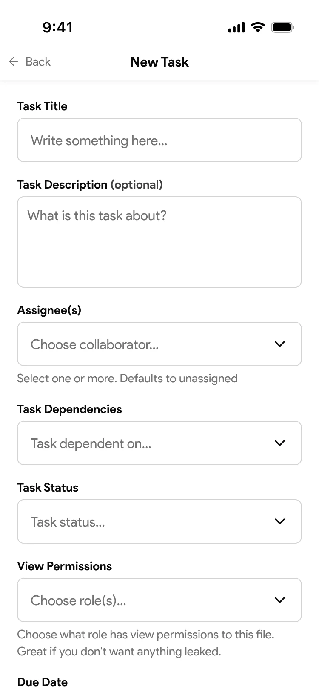
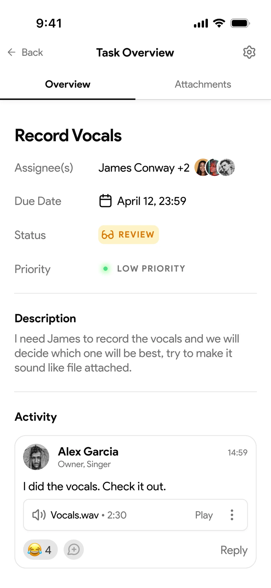
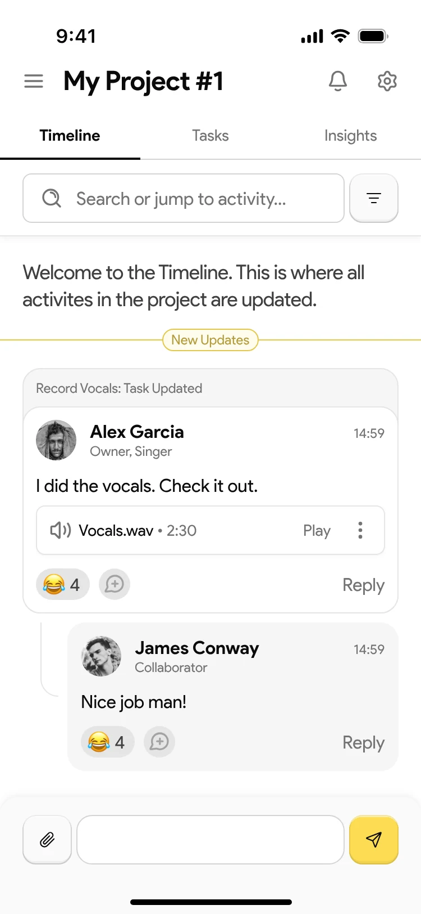
Outcome
- v1.0 designed and built for iOS and Android.
- 50+ artist commitments before launch, won with the app prototypes and pitch decks I designed.
- A registered EU trademark.
The product did not take off. The company ran out of money before it found its users.
What I'd do differently
Our scope grew faster than the team could build, and the core loop was never tested on its own. Today I'd push for a tight MVP around that one loop, agree on a single success metric, and put it in front of real fans first. Saying no to features is part of the job.